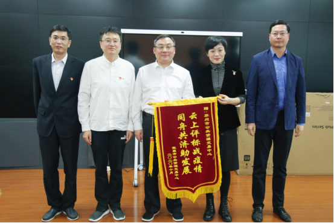

【信息发布时间：2020-11-05阅读次数：】 【我要打印】 【关闭】
10月28日上午，宜昌市公共资源交易中心党组书记、主任赵小谊一行来我中心学习考察。市行政审批局副局长张硕群主持召开座谈会，中心副主任张彬、邵元及信息部、工程交易部、交易管理部等有关部门负责人参加座谈。
座谈会前，中心副主任张彬、邵元陪同考察组一行实地参观了中心的服务大厅各功能区、服务开评标现场、不见面开标直播间等，听取现场工作人员的讲解，观看了苏州市公共资源交易大数据平台演示。
座谈会上，双方围绕远程异地评标常态化做法和经验；远程异地评标中交易风险防控措施；不见面开标相关做法和经验；在强化平台功能、优化营商环境方面的做法和经验等方面进行了深入交流探讨。
为感谢我中心在疫情期间对宜昌市公共资源交易工作的大力支持，赵主任送上了一面写有“云上评标战疫情，同舟共济助发展”的锦旗。

张局长表示我们苏州市公共资源交易中心已与宜昌市公共资源交易中心对口建立远程异地分散评标工作机制，正式启动了跨省域合作，接下来要进一步探讨常态化合作机制，争取实现干部交流、系统共享等多领域全方位的合作。